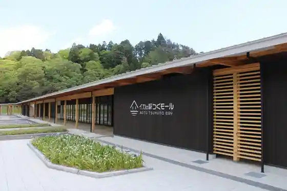
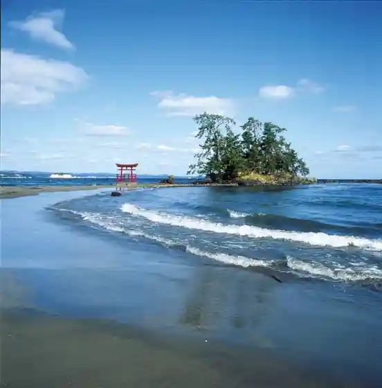
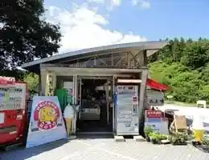
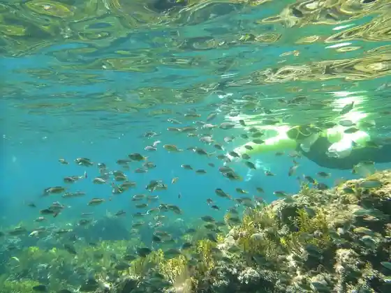

Ika no Eki Tsuku Moru
Noto, Ishikawa · 0768-74-1399 · Official / source link

Tsukumo Wan
Noto, Ishikawa · 090-3290-0110 · Official / source link
Koiji Coast
Noto, Ishikawa · 0768-62-8526 · Official / source link

Roadside Station Sakura Toge
Noto, Ishikawa · 0768-76-1518 · Official / source link

no to Kaiyo Fureai Center
Noto, Ishikawa · 0768-74-1919 · Official / source link

Mawaki Iseki
Noto, Ishikawa · 0768-62-4800 · Official / source link
Yanagida Shokubutsu Park
Noto, Ishikawa · 0768-76-1680 · Official / source link
Ishikawaken Yanagida Hoshi no Kansatsu Kan (Dodan)
Noto, Ishikawa · 0768-76-0101 · Official / source link
Ishikawa Prefectural Noto Shonen Nature no Ie Reiwa 6 Nen (2024 Nen) Noto Peninsula Jishin no Eikyo Niyori Tomen no Kan Kyukan
Noto, Ishikawa · 0768-72-2200 · Official / source link
Ajisai Tera (Byodo Tera)
Noto, Ishikawa · 0768-76-1311 · Official / source link
Seminahausu (Yama Biko)
Noto, Ishikawa · 0768-76-1611 · Official / source link
Kokuminshukusha Noto Yanagida So
Noto, Ishikawa · 0768-76-1550 · Official / source link
Asutorokoteji
Noto, Ishikawa · 0768-76-1680 · Official / source link
Tsukumo Wan Enchi Campground
Noto, Ishikawa · 0768-74-0102 · Official / source link
Fisshinguburijji Akasaki
Noto, Ishikawa · 0768-62-8526 · Official / source link
no to Kiriopun Garden 2026
Noto, Ishikawa · 0768-26-2303 · Official / source link
no to no Fakutorii
Noto, Ishikawa · 0768-76-8100 · Official / source link
Goshikigahama Beach
Noto, Ishikawa · 0768-62-8526 · Official / source link
Senjojiki Pogatto Park
Noto, Ishikawa · 0768-62-8526 · Official / source link
Ishikawaken Kaiyo Gyogyo Science Museum (Umitosakana no Science Museum) Reiwa 6 Nen (2024 Nen) Noto Peninsula Jishin no Eikyo Niyori Tomen no Kan Rinji Kyukanchu
Noto, Ishikawa · 0768-62-4655 · Official / source link
En Shima Yama Park
Noto, Ishikawa · 0768-62-3669 · Official / source link
Akasaki Ichigo Sono
Noto, Ishikawa · Official / source link
Miyaji Koryu Shukuhakujo Kobushi
Noto, Ishikawa · 0768-76-0021 · Official / source link
Akasaki Coast
Noto, Ishikawa · 0768-62-8526 · Official / source link
Noto Kankojoho Suteshon Tabi Suta
Noto, Ishikawa · 0768-62-8530 · Official / source link
TSUKUMO STYLE
Noto, Ishikawa · 050-1720-0001 · Official / source link
Buruberii Tsumi Tori Experience (Yanagida Buruberii Sono)
Noto, Ishikawa · 0768-76-1680 · Official / source link
Heart&Beer Nihonkai Kurabu
Noto, Ishikawa · 0768-72-8181 · Official / source link
Sarubiarodo
Noto, Ishikawa · 0768-62-8526 · Official / source link
Fujinami Sports Park
Noto, Ishikawa · 0768-62-3884 · Official / source link
Noto Town Hall
Noto, Ishikawa · 0768-62-1000 · Official / source link